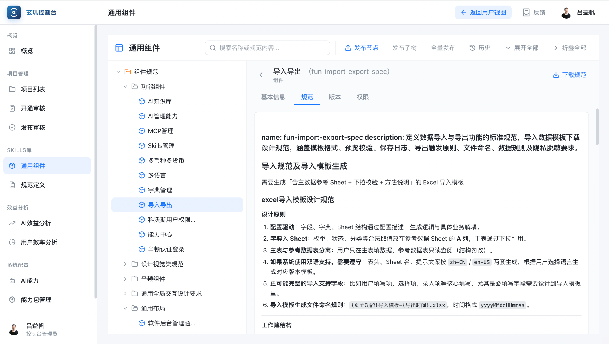

04 / PROJECT
玄玑平台 Spec 与用户指南
为玄玑内置面向 Agent 的开发 Spec，
并用 Skill 自动生成带样例界面的用户指南。
玄玑是什么
需求达意，玄玑成章。碳基用业务语言描述需求，硅基在企业规范、权限、沙箱与发布流程之内，把内部应用建设到可验收。
玄玑是科沃斯企业级、Spec 驱动的 AI Coding Agent 开发平台：碳基（人）用业务语言说清「要什么」并在关键节点验收，硅基（Agent）按阶段建成可预览、可上线的内部应用。
碳基提出需求
→
硅基按阶段建设
→
碳基验收
自然语言需求转化为文档、可交互原型与可运行系统；规范注入生成过程，阶段闸门未确认不进入下一环。
更接近「产品型构建者」：写清要什么、在关键节点守门验收，并守护规范是否一致。
把需求给玄玑，不是把技术方案告诉他。结果须真正可用——能存数据、能操作、能管权限。
为什么需要 Spec，里面有什么
没有统一约束，同类页面会各做各的；把规则内置进平台，Agent 才有可执行的边界。
WITHOUT SPEC
没有 Spec 时
每个项目重新发明列表、详情与导入；视觉和交互漂移，验收标准也不清，Agent 只能凭感觉生成。
WITH SPEC
有了 Spec 之后
同类页面共用同一套边界；高频能力沉淀为平台标准组件，少重复造轮子，体验保持一致。
Spec 里有什么

UI/UX SPEC
通用全局交互设计要求.md
软件后台管理通用布局要求.md
标准门户主页布局规范.md
列表页设计规范.md
内容详情页交互.md
辛顿列表详情交互通用设计.md
通用后台登录页排版规范.md
科沃斯后台管理登录页.md
图表类开发规范.md
多语言相关特殊交互要求.md
功能 SPEC
AI能力管理.md
AI知识库.md
SKILLS管理.md
MCP管理.md
能力中心.md
辛顿认证登录.md
科沃斯用户权限中心IAM.md
字典管理.md
导入导出.md
多语言.md
多币种多货币.md
飞书消息.md
飞书日程.md
玄玑管理控制台中的Spec / 技能管理。
编写维护Spec对应的相关Markdown文档。
把给 Agent 的 Spec，写成给人看的指南
用 Skill 自动把约束 Agent 的 Spec 转成用户指南，以样例界面说明结果预期。
给 Agent（硅基）
Spec 规定边界；生成时按规则执行。
给人（碳基）
指南用样例界面说明「应该长这样」。
触发提示词
短话术即可唤起对应能力与规范。
预期可校准
看见样例与清单后，再判断生成结果是否达标。
触发条件、流程与硬约束
抽取要点，套用指南骨架
样例界面 + 提示词 + 清单